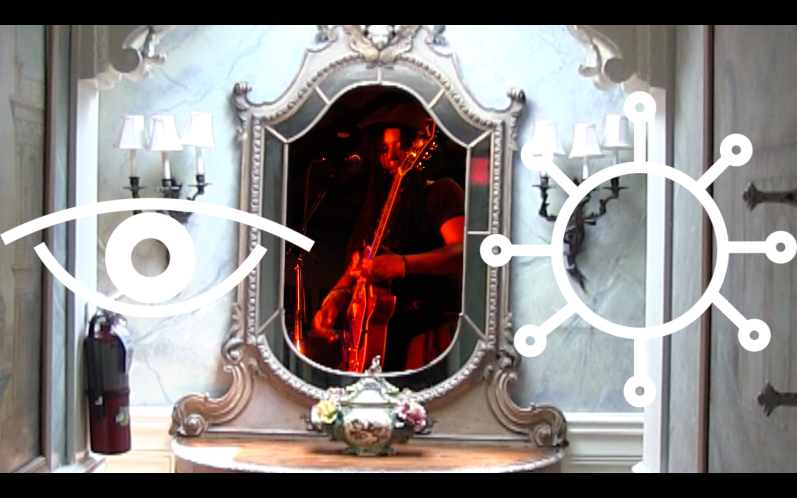
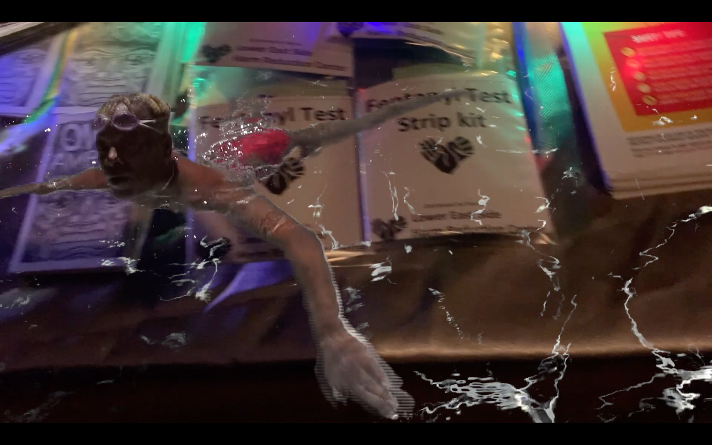
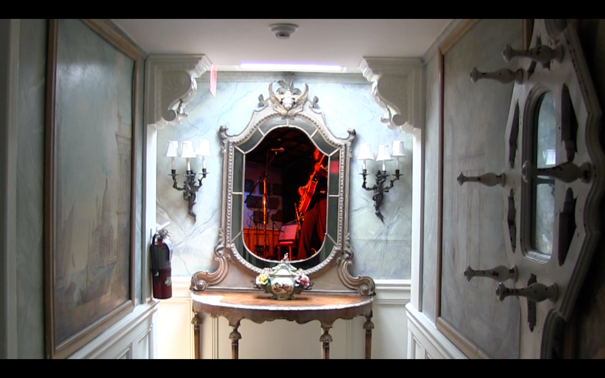
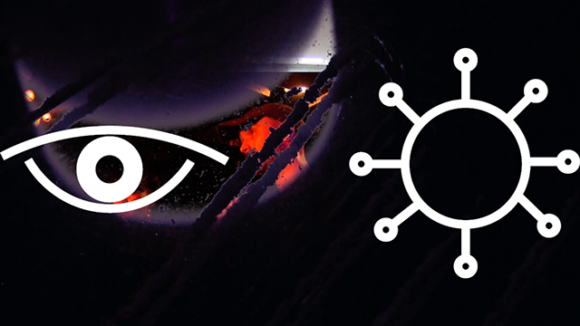

(eye, virus)
For the thirtieth annual Day With(out) Art on December 1, 2019, Visual AIDS presented STILL BEGINNING, a program of seven newly commissioned videos responding to the ongoing HIV/AIDS epidemic by Shanti Avirgan, Nguyen Tan Hoang, Carl George, Viva Ruiz, Iman Shervington, Jack Waters / Victor F. M. Torres, and Derrick Woods-Morrow.
Recalling Gregg Bordowitz’s reminder that “THE AIDS CRISIS IS STILL BEGINNING,” the program resists narratives of resolution or conclusion, considering the continued urgency of HIV/AIDS in the contemporary moment while revisiting resonant cultural histories from the previous three decades. STILL BEGINNING premiered at the Whitney Museum of American Art on December 1, 2019, and screened at more than one hundred venues worldwide.


Through an experimental collage of video and pictographs, (eye, virus) explores how conversations around disclosure, stigma, and harm reduction shift across generations and from public to private realms. Combining street interviews with footage from a punk show and a mobile testing site, the video centers pleasure and community as it expands the conversation around HIV to include hepatitis C and the opioid epidemic.
(eye, virus) extends from documentation of a 2017 public program titled AIDS OS Y Version 10.11.6 and was collaboratively produced with Nikki Sweet.


Day With(out) Art: STILL BEGINNING
Commissioned by Visual AIDS for STILL BEGINNING: The 30th Annual Day With(out) Art. The program screened globally, including presentations at the Whitney Museum of American Art, Brooklyn Museum in collaboration with The Studio Museum in Harlem, Museum of Contemporary Art Chicago, MOCA Los Angeles, and numerous museums, universities, community organizations, and independent art spaces internationally.
Selected screening history
(eye, virus) screened as part of Visual AIDS’s 2019 Day With(out) Art program at 115 venues globally. Selected venues included the Whitney Museum of American Art, Brooklyn Museum / The Studio Museum in Harlem, New Museum, Queens Museum, MOCA Los Angeles, Museum of Contemporary Art Chicago, The Andy Warhol Museum, SFMOMA Open Space, Harvard Art Museums, Museum of Contemporary Art Barcelona, Schwules Museum Berlin, Pera Museum, and Museum of Contemporary Art Taipei.